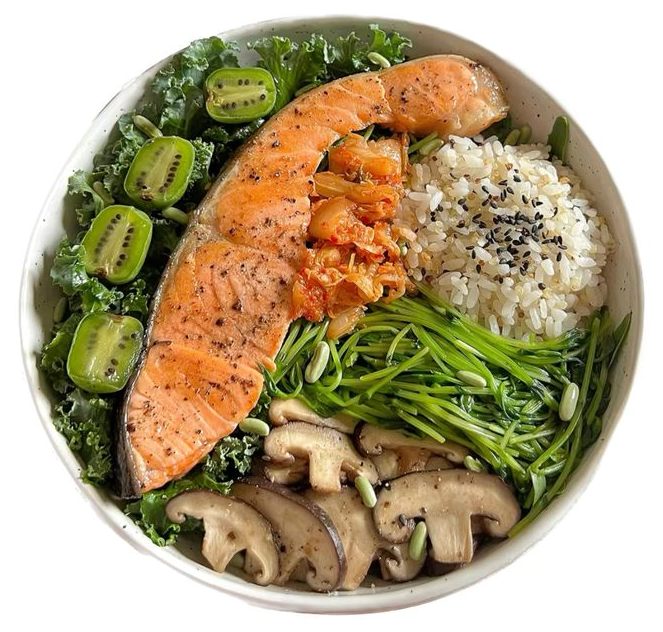

Я Валерия. Сейчас заканчиваю обучение в Сеченовском и постоянно добираю знания на курсах, в том числе
есть сертификат Harvard Health.
Мне близок спокойный доказательный подход: без давления, жёстких диет и крайностей.
Я смотрю на питание шире: через анализы, ЖКТ, сон, стресс, энергию, привычки и то, как человек реально
живёт каждый день.
В работе мне важно не “переделать вас”, а аккуратно собрать понятную систему: что есть, что проверить,
что поменять в режиме и как двигаться дальше без хаоса и чувства вины.

работа
Что я делаю
разбираю питание и привычки
смотрю анализы и возможные дефициты
объясняю, что может влиять на состояние
даю понятные рекомендации по еде, режиму и добавкам
помогаю внедрить изменения без перегруза
при необходимости подсказываю, к какому врачу обратиться
лучший продукт
Нутри-стратегия
твой онлайн помощник
Нутри-стратегия — это персональный документ с понятным планом: питание, режим, добавки, анализы,
привычки и шаги внедрения.
Это не универсальная схема и не меню «на 1200 ккал». Я собираю анкету, питание, жалобы, анализы и цели —
и на основе этого составляю план, с которым можно работать дальше.
полное сопровождение — стратегия входит полностью
отдельно — можно заказать без сопровождения
еда
детали
цветы
услуги
Форматы работы
На выбор разные форматы сопровождения
глубокая работа с привычками
Полное сопровождение 4 недели
Для тех, кто хочет не просто рекомендации, а совместную работу и внедрение.
Что входит
4 созвона — новые знания, разбор недели, формирование привычек
4 недели сопровождения
общение в чате и поддержка
разбор питания, анализов, привычек и состояния
рекомендации по питанию, режиму и добавкам
работа с внедрением изменений
Полная нутри-стратегия на 50+ страниц — персональный документ с планом питания,
режима, анализов и шагов внедрения.
Если хотите получить план и делать сами → нутри-стратегия.
03
Если нужна поддержка, но без глубокого формата → лайт-сопровождение.
04
Если хотите результат через совместную работу → полное сопровождение.
скоро
Курс
В середине июня открываю запись на первый поток курса. Это будет формат для тех, кто хочет спокойно
наладить питание, понять своё состояние и внедрить базу без жёстких диет.